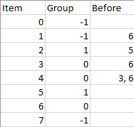

| Category | Difficulty | Likes | Dislikes |
|---|---|---|---|
| Algorithms | Hard | 1890 | 319 |
amazon | bloomberg | citadel | google
There are n items each belonging to zero or one of m groups where group[i] is the group that the i-th item belongs to and it's equal to -1 if the i-th item belongs to no group. The items and the groups are zero indexed. A group can have no item belonging to it.
Return a sorted list of the items such that:
beforeItems[i] is a list containing all the items that should come before the i-th item in the sorted array (to the left of the i-th item).Return any solution if there is more than one solution and return an empty list if there is no solution.
Example 1:

Input: n = 8, m = 2, group = [-1,-1,1,0,0,1,0,-1], beforeItems = [[],[6],[5],[6],[3,6],[],[],[]]
Output: [6,3,4,1,5,2,0,7]Example 2:
Input: n = 8, m = 2, group = [-1,-1,1,0,0,1,0,-1], beforeItems = [[],[6],[5],[6],[3],[],[4],[]]
Output: []
Explanation: This is the same as example 1 except that 4 needs to be before 6 in the sorted list.
Constraints:
1 <= m <= n <= 3 * 104group.length == beforeItems.length == n-1 <= group[i] <= m - 10 <= beforeItems[i].length <= n - 10 <= beforeItems[i][j] <= n - 1i != beforeItems[i][j]beforeItems[i] does not contain duplicates elements.